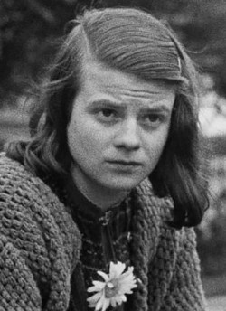
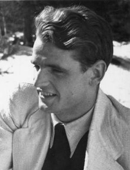

Sophia Magdalena Scholl was a German student and anti-Nazi political activist, active within the White Rose non-violent resistance group in Nazi Germany. She was convicted of high treason after having been found distributing anti-war leaflets at the University of Munich (LMU) with her brother, Hans. For her actions, she was executed by guillotine. Since the 1970s, Scholl has been extensively commemorated for her anti-Nazi resistance work.
 